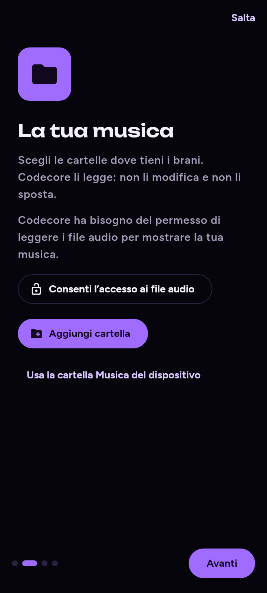
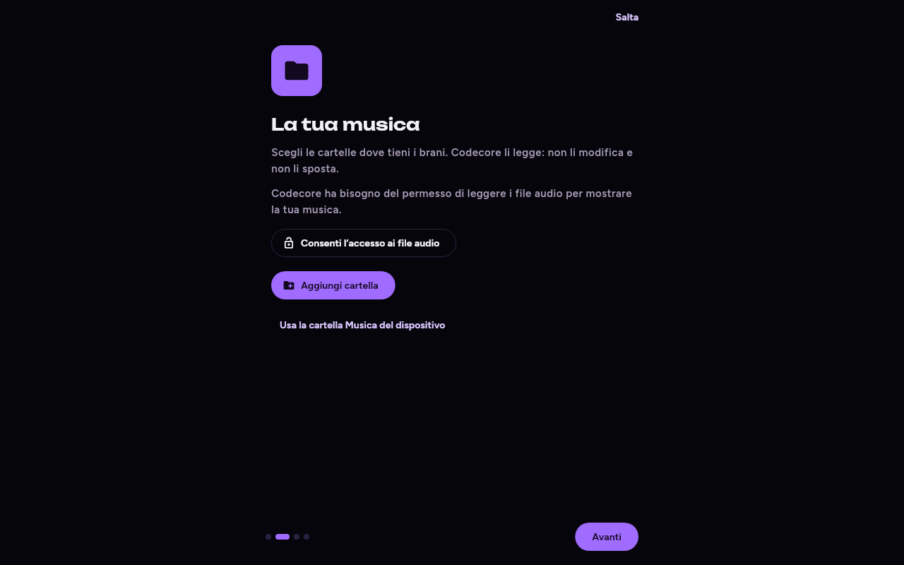

Le 5 pagine del primo avvio (Benvenuto, Cartelle e permesso audio, Funzioni online, Spotify, Download/Jam/condivisione). Ogni pagina si salta, la scansione parte alla fine (D-12). Il codice di oggi non ha pagine per lingua o tema: non ne aggiungo.

Il tuo lettore musicale personale: niente account, niente server. La musica resta sul tuo dispositivo.
Scegli le cartelle dove tieni i brani. Codecore li legge: non li modifica e non li sposta.
Codecore ha bisogno del permesso di leggere i file audio per mostrare la tua musica.
Sono spente: Codecore non si collega a Internet per conto suo. Puoi accenderle ora o più tardi dalle Impostazioni.
Su exportify.net scarichi le tue playlist di Spotify in un file. Codecore lo prende e le aggiorna qui.
Non serve collegare nessun account: il file lo scarichi tu.
Puoi scaricare brani da YouTube sul tuo dispositivo, per ascoltarli come il resto della tua musica.
Con una Jam ascolti la stessa musica insieme a un altro dispositivo sulla stessa rete.
Puoi inviare brani ad altri dispositivi vicini, con un PIN, senza passare da Internet.

Scegli le cartelle dove tieni i brani. Codecore li legge: non li modifica e non li sposta.